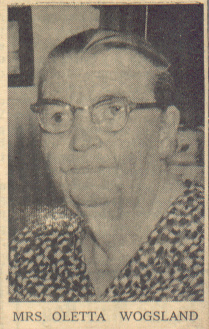

|
 Oletta in a 1958 newspaper photo | Oletta Christina Solum was born March 21, 1875 in Norway. She immigrated to the USA with her brother Chris at age 14. She married Levi Iverson on July 3, 1891. Unfortunately Levi was killed in a logging accident in Hazelhurst, WI on January 4th, 1892. Their daughter Lilly was born five months later on May 23, 1892. The following year Oletta married Martin Wogsland. Together Martin and Oletta had nine children and lived in Tomahawk, Wisconsin. She died at a nursing home of heart failure in mid-May of 1963. |